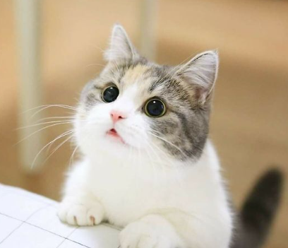

LIM MIN SEOK
pacpac2000@sju.ac.kr
+82 10 1234 5678
Sejong University, Seoul, South Korea
EDUCATION
Bachelor of Science, Department of Smart Device Engineering CGPA: ?.??/4.5 (??.??%)
Sejong University (SJU), Seoul, Republic of Korea
Department of Smart Device Engineering
Subject of Academic Interest: Human Demonstration and Robot Convergence.
PROFESSIONAL EXPERIENCE
- [JAN 2024 - ] Undergraduate Student, Robotic Mechanics Wire Friction Compensation Study (BML)
Lab, Department of Intelligent Mechatronics Engineering, Sejong University, Seoul, South
Korea.
- Posters for KROS Academic Conference to be announced
TECHNICAL SKILLS
- Programming and development skills
- MATLAB
- High School Math Tutoring